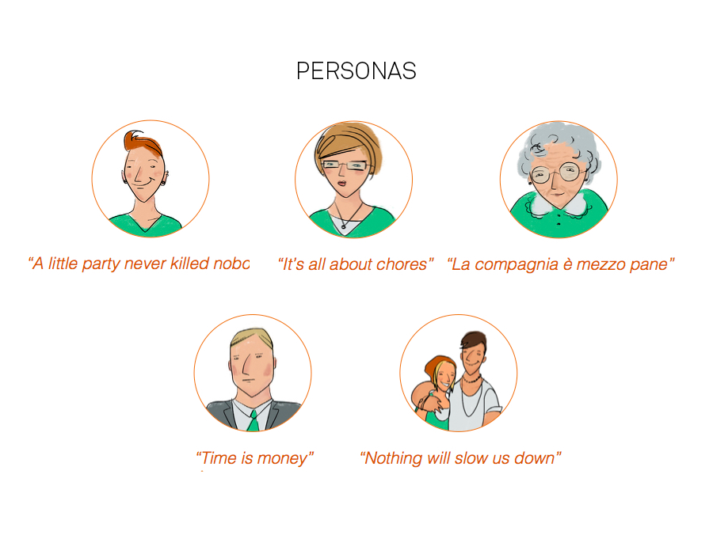
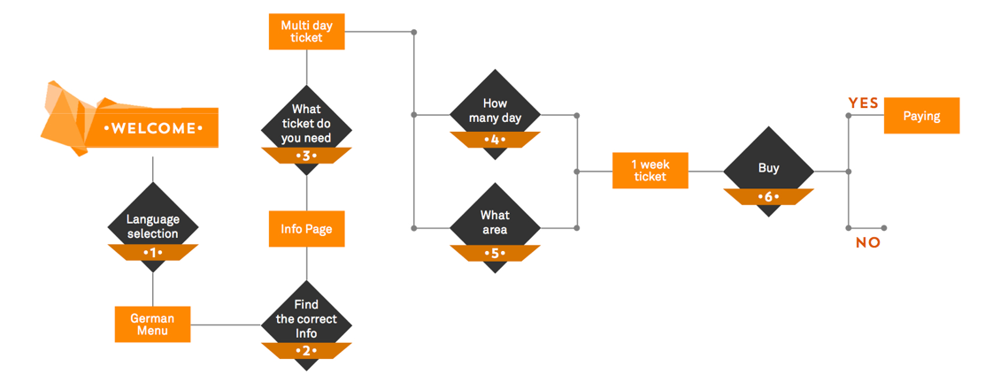
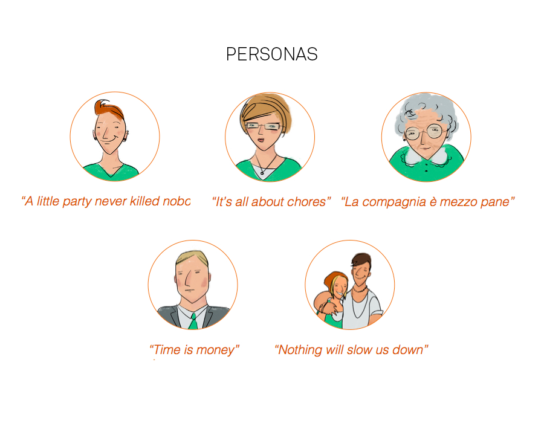
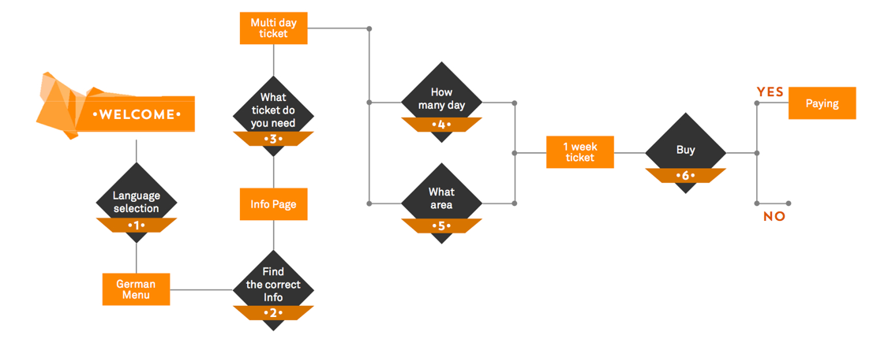

ATM
A minimalistic but visually appealing and easy to navigate website and web application that were designed based on observation, research and analysis. Low (Balsamiq) to high (InVision, html) fidelity prototypes were created and several user-testing sessions were run to ensure the best outcome.


 


